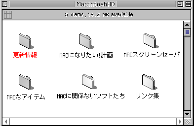

あなたは番目の来訪者です。
Last Update:2000.06.09
MACと関係ないその他のソフトの「Folder List Maker」がVer0.9へバージョンアップ！
久々に復帰です。(でも、コンテンツはほとんどいじっていません。)
そして、物理的に引越しをしました。(神奈川→北海道)
ビール券の送付住所が変更になっています。(でも、同梱ファイルはまだ修正しきれていません。)メールでご連絡いただくか、シェアレジのご利用をお願いします。
(ただ、ポリシーというか面倒くさがりなんで機能制限等は一切設けておりません。)
システムを改造してあなたのWindowsをもっとMACに．．．
ＭＡＣになりたい!スクリーンセーバはここです。
MACな壁紙やアイコン、デスクトップテーマ、マック化用ソフトはここです。
Post Petのおやつもあります。
ニフティサーブの方へ移動しています。直接ジャンプできます。
「Folder List Maker」がVer0.8へバージョンアップ！
リンクしてくれている方々のページや、お世話になった方々へのリンク集です。(1999年1月1日現在)
更新が遅れて、ご迷惑をおかけします。ちょっと整理して近日修正します。